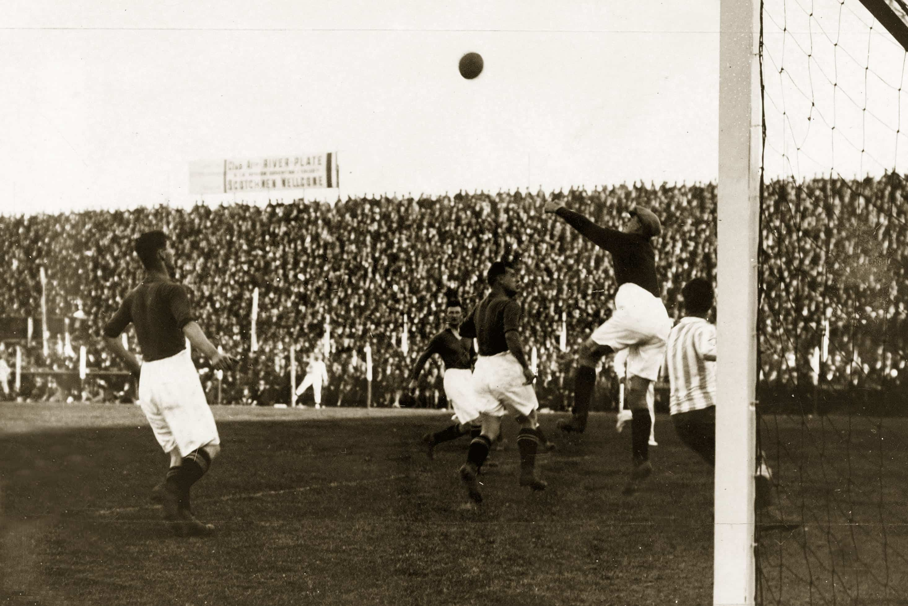

Jugadores Famosos
Algunos de los jugadores más icónicos son Pelé, Diego Maradona y Lionel Messi. También destacan Cristiano Ronaldo, Johan Cruyff y Zinedine Zidane.

Descubre la historia, reglas, curiosidades y datos interesantes sobre el fútbol.
El fútbol tiene sus orígenes en diversos juegos de pelota practicados desde la antigüedad y se consolidó como deporte en el siglo XIX en Inglaterra.
Algunos de los jugadores más icónicos son Pelé, Diego Maradona y Lionel Messi. También destacan Cristiano Ronaldo, Johan Cruyff y Zinedine Zidane.
Algunos de los estadios más famosos en el mundo del fútbol son:
El fútbol cuenta con torneos de gran relevancia a nivel mundial, como: